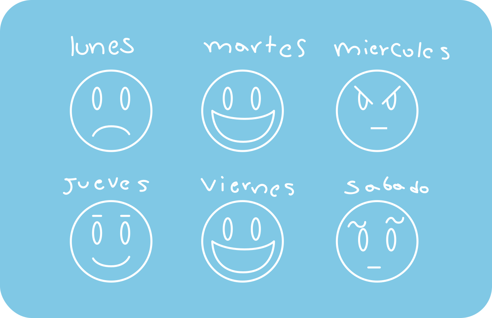

Para mi, sí es paz, poder salir a la calle y no ver o escuchar helicópteros volando, sentir que todo va a estar bien si estoy afuera de mi casa. Paz es que todo lo que sucede está controlado, y que a pesar de todo lo que pasó, eso no volverá a suceder en el futuro.
La paz para mi es dar amor los unos a los otros, respetar las diferencias, porque cada uno nosotros es un mundo diferente.
Para mi, la paz es el sueño de todo pueblo, la imperiosa necesidad de vivir y de acabar con tanta división que hay en el país.
La paz es un sinónimo de tranquilidad, así que para mi esta palabra es estar en un ambiente natural, en donde no tenga muchas preocupaciones y pueda estar bien conmigo mismo y con los demás.

Para mí la paz se puede encontrar en diferentes aspectos de la vida como en la parte emocional, que es encontrar un equilibrio con los diferentes sentimientos que se pueda sentir el día a día y que nos dé la tranquilidad de poder llevar nuestro estilo de vida con los diferentes obstáculos que ella nos presenta.